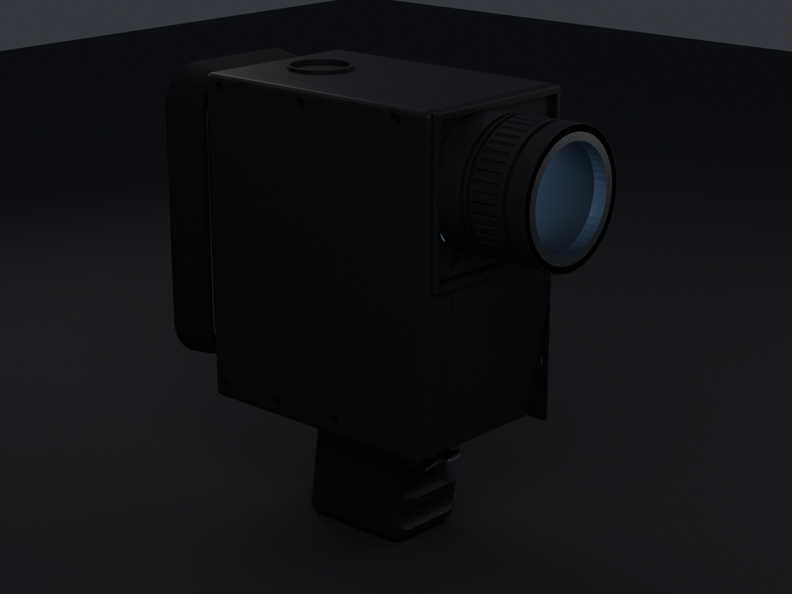
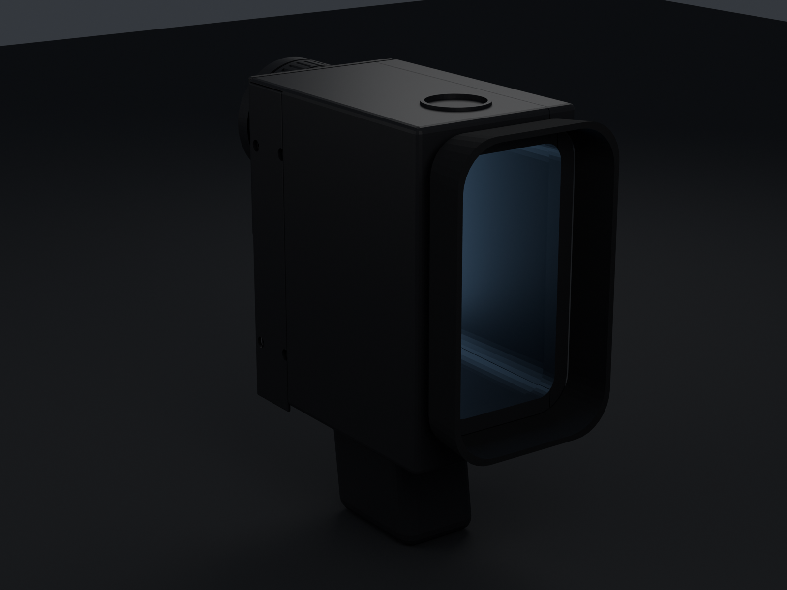
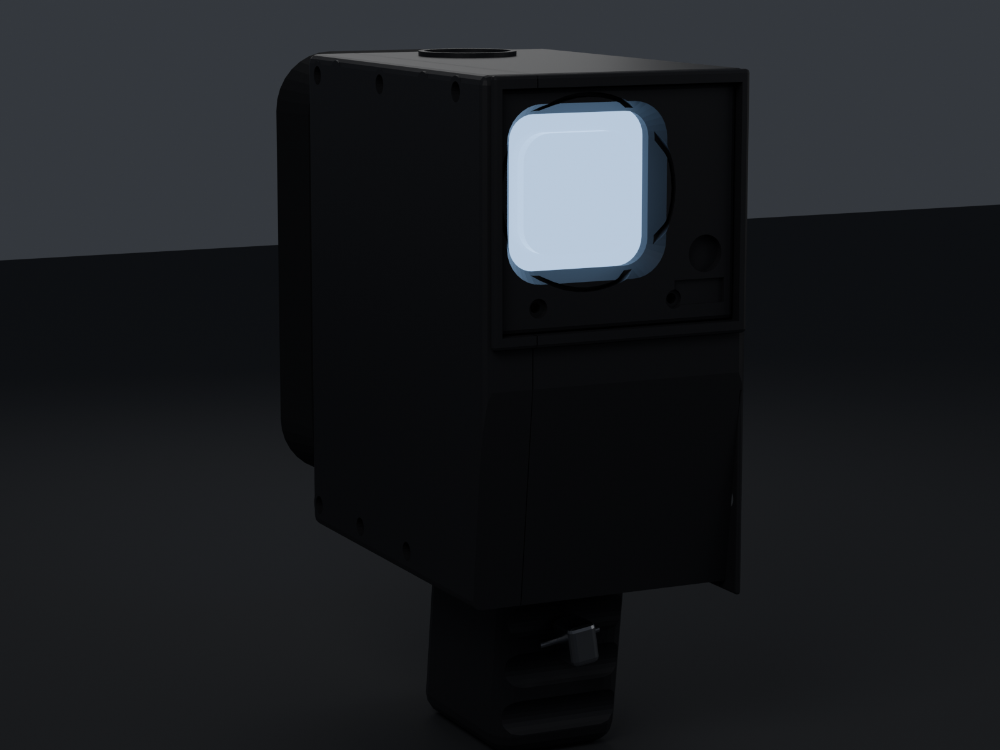
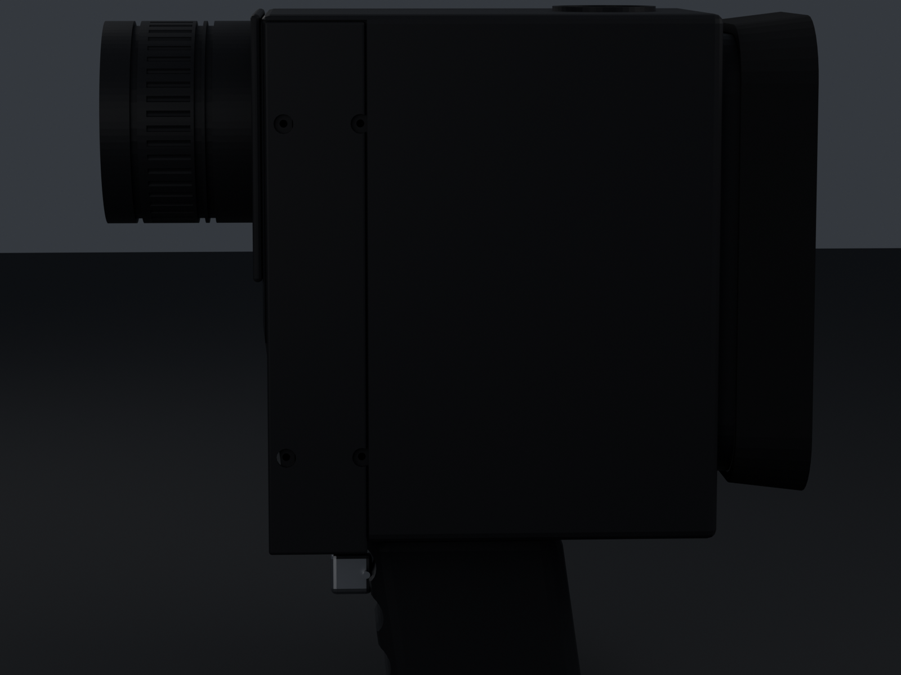
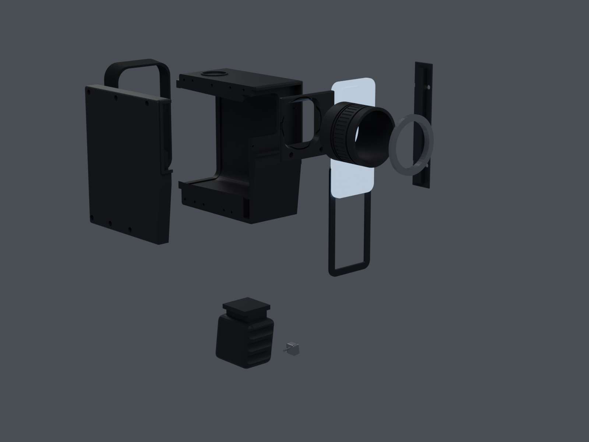

A Super 8 camera body whose film cartridge chamber has been replaced by a cradle for a phone. The rear cameras look forward through the lens board; the screen faces back down a finder tunnel.
The real XL-400 is 48 × 103 × 184 mm. An iPhone 16 Pro is 71.5 mm wide — half again as wide as that whole camera — and 149.6 mm tall. Standing one upright inside a Super 8 body forces a bigger, taller camera. This is an homage in the XL-401's idiom, not a copy of it.
Deliberately. The iPhone's camera plateau sits in the corner of its back, so the optical axis lands off-centre however you place the phone. Centring it would need a 100 mm-wide body. The photocell window on the other side balances it, the way a real meter cell does.
The phone is physically portrait, so iOS records portrait — fine for Reels or Shorts. For 16:9, use a camera app that locks orientation independently of the device; Blackmagic Camera and Filmic Pro both do.
A Super 8 zoom barrel is a tube in front of the lens, and a tube is exactly what vignettes a phone camera. So the barrel twists off.
| Lens | Needs | Barrel fitted | Barrel removed |
|---|---|---|---|
| Ultra-wide 0.5× | 60.0° | 12.0° vignettes | 68.6° clear |
| Main 1× | 36.5° | 12.0° vignettes | 66.5° clear |
| Tele 5× | 11.5° | 12.0° clear | 64.8° clear |
Measured, not asserted: the generator ray-casts the assembled geometry from each lens position and reports the largest cone that reaches open air. Barrel on is for the shelf, and for 5× shots. Barrel off is for shooting.
| Part | Print size | PLA | Closed | Overhang | Notes | STL |
|---|
Print 13_phone_gauge first. It is a
dummy iPhone 16 Pro at cased dimensions and takes about 40 minutes — check it drops
into the cavity before committing 20 hours to the main shell.
Everything else: 0.4 mm nozzle, 0.2 mm layers, 4 perimeters, 20 % gyroid, no supports in the orientations above. The shell prints outer-face-down with the seam upward on purpose, so every pocket, bore and boss opens toward the sky.
Download all parts as one 3MF · Blender source · Generator script · Validation report





pip install bpy==4.5.3 trimesh manifold3d rtree numpy python3 build_xl401.py export # STLs, 3MF, GLB, .blend, VALIDATION.md python3 build_xl401.py render hero_front
Every dimension lives in one PARAMS block. Change a number, re-run,
get a new set of STLs. Geometry is built from primitives and CSG; the kernel is
manifold3d rather than Blender's boolean modifier, which segfaults
nondeterministically on this model in a headless build.
Hardware: 6 × M3 × 25, 4 × M3 × 10 (door), 2 × M3 × 10 (lens board), 4 × Ø3 × 18 dowel pins, 1 × ¼"-20 hex nut.